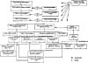

by Abraham Kandel
CRC Press, CRC Press LLC
ISBN: 084934297x Pub Date: 11/01/91
|
|
Fuzzy Expert Systems
by Abraham Kandel CRC Press, CRC Press LLC ISBN: 084934297x Pub Date: 11/01/91 |
| Previous | Table of Contents | Next |
For each student, curriculum planning begins by establishing that student’s current achievement goals. To determine these the student must be tested on skills in the knowledge model, beginning at the lowest prerequisite level. On each assessed skill, the student’s level of expertise is classified as ranging from nonmaster (cannot perform skill), through novice master (performs accurately but slowly), to expert (performs rapidly and accurately). If expertise is attained on all skills at one horizontal level in the hierarchy, the testing continues at the next horizontal level and continues until a level is reached where deficiencies are found.

Figure 1 TAPS instructional hierarchy.
Setting achievement goals is, at first, conceptually simple. At horizontal level 1 (Figure 1 is an abbreviated hierarchy, with skill box 1 actually representing a class of skills), the tutor sets a performance goal for each skill that is an increment above the student’s current level. For example, if the student is performing at the level of novice mastery on the skill understand change schema, the tutor will set a goal for the student to reach an expert level on that skill. This goal-setting heuristic can be stated as follows: Curriculum Planning Rule 1 — for any assessed skill, the achievement goal for that skill is set at one level above the currently assessed achievement level.
In addition to setting goals for all eligible skills within a horizontal level, a planner should also set all possible instructional goals for moving vertically from one horizontal level to another. This idea can be stated as follows: Curriculum Planning Rules 2 and 3 — a performance goal can be set for any nonassessed higher-level skill that represents a combination of assessed lower-level prerequisite competencies, provided that all involved prerequisite competencies have been mastered at the novice level. The performance goal for the combined skill is set at the maximum possible achievement level that does not exceed the lowest performance goal attained for any single prerequisite competency. For example, if a student has achieved novice competency on skill 4.1 (instantiating change-schema problems) and an expert level of competency on prerequisite skill 6.1 (calculational attachments to change schemas), the achievement goal for the next-higher competency that combines these skills (e.g., instantiating change problems and attaching procedures) cannot exceed novice mastery.
Goal setting becomes more complicated as the student progresses through the curriculum, since the student will soon be exhibiting multiple levels of performance in different parts of the hierarchy. However, the original goal-setting heuristics can continue to manage movement through the curriculum. These heuristics constrain one another in a convenient manner. The vertical rules cannot set a goal too high because they are constrained by Rule 1.
The current achievement goals set by the curriculum planner are recorded in the student’s permanent record and remain eligible for that student until they are changed by the planner. Goals are updated after each instructional session or if a lengthy time lag expires between sessions.
The lesson planner selects from the student’s currently eligible achievement goals, and plans a tutorial (approximately 40 min) designed to accomplish that lesson goal. The lesson planner can call upon various tutorial routines, which have the capability of teaching these routines to the student.
We have designed our tutor to permit implementation and testing of different instructional routines. To illustrate, the routine called Show Me has been developed to have various skill level variations. The purpose of Show Me is to reach the schema-chaining skill. The routine also promotes awareness of problem structure — a problem’s underlying schemas and how they are joined through common sets. The routine uses a worked examples approach that has proved effective, whereby the student studies and models an expert solution.6,25 A system expert illustrates for the student how to solve a word problem by constructing a diagrammatic tree representation. This follows what Anderson et al.1 found concerning geometry proofs, i.e., “The graphical structure … seems to be the key to enabling students to understand the structure of a proof ….” The complete expert solution has the same structure as the partial one shown in Figures 3 and 4.
Following the expert’s demonstration, the student is then presented with a different problem and asked to model the expert’s performance by using the system’s problem-solving tools provided by the interface. A partial student solution for the apartment problem is shown in Figure 3. In Show Me, the tools used to build a solution include a set of problem schema boxes (see Figure 2) that can be dragged by the student to the workspace and a set of labels (see Figure 3) and operators generated by the system’s expert which the student may use if she chooses. If the tutor deems it necessary, tutorial assistance, individualized to the particular student, may be given (see Figure 4, for example). Depending upon the exact instructional goal of the exercise and the version of the drill being offered, the student may then be asked to compare her solution to an alternative expert solution.
| Previous | Table of Contents | Next |
){kind=link}